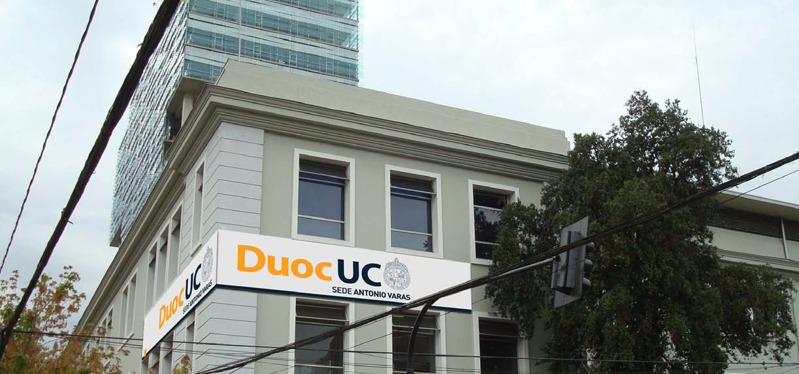

Sedes / Antonio Varas



Descripción
La sede Antonio Varas, ubicada en la comuna de Providencia, es la de mayor tamaño de la institución, atendiendo a una población estudiantil de 8.500 alumnos. Dotada de la más alta tecnología e infraestructura, la sede Antonio Varas de Duoc UC destaca por su innovador proyecto educativo que propone un enfoque complementario entre los ámbitos de la Ingeniería, Administración y Negocios, Informática y Telecomunicaciones, Recursos Naturales y Salud, concretándose en 18 carreras formativas de profesionales con competencias que el mercado necesita. Para realizar su labor, cuenta con cerca de 400 docentes de diversos ámbitos del quehacer académico, con un importante porcentaje de profesionales activos en su especialidad. En 30.479 m2 construidos, dispone de una excelente infraestructura y equipamiento para entregar a sus alumnos una formación práctica y de alto nivel. La Sede cuenta con el Centro Tecnológico Automotriz, Centro Tecnológico de Informática y Redes, Centro Tecnológico de Electrónica y Automatización, Centro Tecnológico de Administración y Negocios, Centro Tecnológico de Salud, el Centro Tecnológico de Recursos Naturales y el Centro Tecnológico Agrícola de Pirque, infraestructura que permite además mantener importantes vínculos con el sector empresarial y, así, dar apoyo integral al sector productivo. P: Presenciales PEV: Programa Ejecutivo Vespertino
Carreras que se imparten
Administración y Negocios
Auditoría (Diurno/Vespertino)Ingeniería en Administración (Diurno)
Ingeniería en Administración de Recursos Humanos (Diurno)
Ingeniería en Administración de Recursos Humanos Pev (Vespertino)
Ingeniería en Administración Pev (Vespertino)
Ingeniería en Comercio Exterior (Diurno/Vespertino)
Ingeniería en Marketing (Diurno)
Ingeniería en Marketing Pev (Vespertino)
Informática y Telecomunicaciones
Ingeniería en Conectividad y Redes (Diurno/Vespertino)Ingeniería en Gestión de Tecnologías de Información (Diurno/Vespertino)
Ingeniería en Informática (Diurno/Vespertino)
Ingeniería en Infraestructura y Plataformas Tecnológicas (Diurno/Vespertino)
Técnico en Telecomunicaciones (Diurno/Vespertino)
Turismo
Administración Turística (Diurno)Dirección en Administración Hotelera (Diurno)